Guía paso a paso para presentar Hush Buses: el sistema de información geográfica (PostGIS + OpenStreetMap + Cordova) para una empresa de transporte intermunicipal de Cundinamarca.
“Reescribe las reglas del campo de batalla.”
La demostración dura 12–15 minutos. Todo corre en la nube: la página en Vercel y la base de datos PostGIS en Supabase. Solo se necesita un navegador y conexión a internet.
hushbusapp.vercel.app en Chrome o Edge (pantalla completa, zoom 100 %).hushbusapp.vercel.app/app/.| Recurso | Dirección |
|---|---|
| Página | hushbusapp.vercel.app |
| Sistema | /app/index.html |
| Base de datos | Supabase · proyecto chamber-geoapp · us-east-1 |
| Código | Carpeta Taller2/ (landing, app, database, mobile, docs) |
Los datos son de demostración: 21 terminales reales del taller, 30 buses, 24 conductores y la operación del día generada respecto a la hora actual.
| Min | Sección | Qué demuestra | Requisitos |
|---|---|---|---|
| 0:00 | Inicio (hero) | La propuesta: cada bus, cada cupo, cada puesto en el mapa. | Presentación |
| 1:00 | El reto y la red | Las 3 preguntas, los 21 parqueaderos y el límite de Cundinamarca. | R1R4 |
| 3:00 | Vistas 4+1 | Escenarios, lógica, procesos, desarrollo y física. | R2 |
| 5:00 | Base de datos | 9 tablas PostGIS y reglas dentro de la base. | R3 |
| 6:00 | Terminales | Cupos libres, buses parqueados, salidas, conductores. | R8a |
| 7:30 | Geocodificación | Buscar un lugar y la terminal más cercana (KNN). | R10 |
| 8:30 | Registrar | Llegadas, salidas y viajes con reglas que rechazan errores. | R5R6R7 |
| 10:00 | Puestos y conductores | Mapa de puestos por bus y horarios de servicio. | cR8 |
| 11:00 | En vivo | Bus 3D recorriendo la vía real con reloj acelerado. | b |
| 12:30 | App móvil | El mismo sistema empaquetado con Cordova. | R9 |
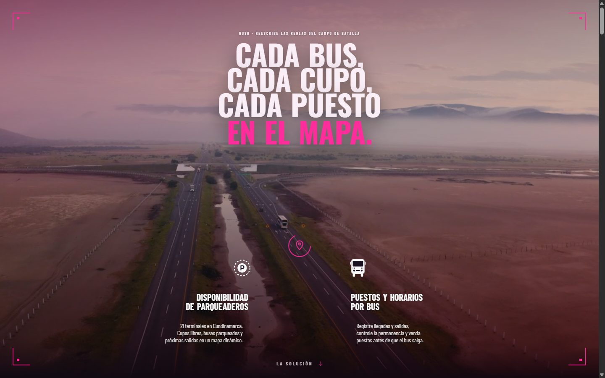
Una empresa intermunicipal necesita saber tres cosas: dónde hay cupo, dónde están sus buses y cuántos puestos le quedan a cada uno. Todo eso lo resolvemos sobre un solo mapa.
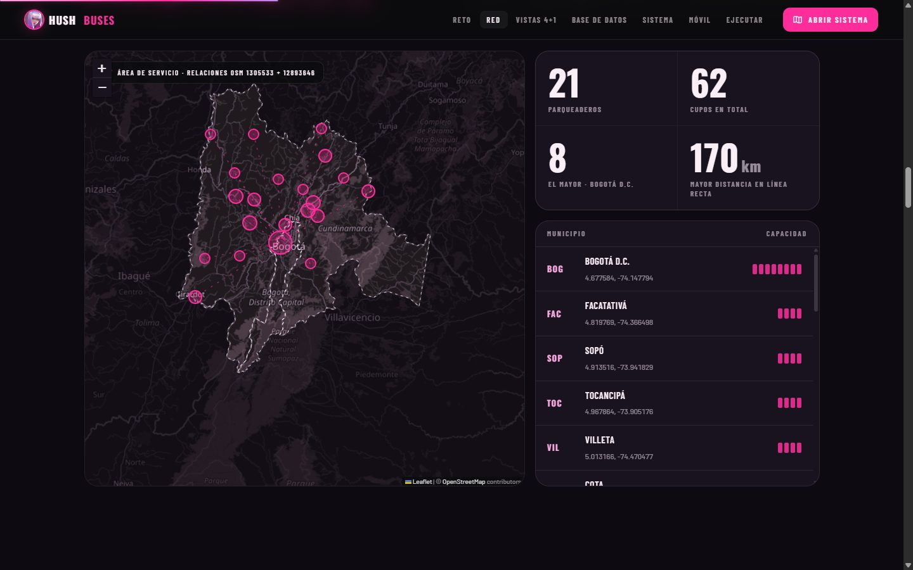
Estos son exactamente los 21 parqueaderos del enunciado. Lo que está fuera de Cundinamarca y Bogotá aparece oscurecido: la base de datos ni siquiera permite registrar una terminal por fuera de esa línea.
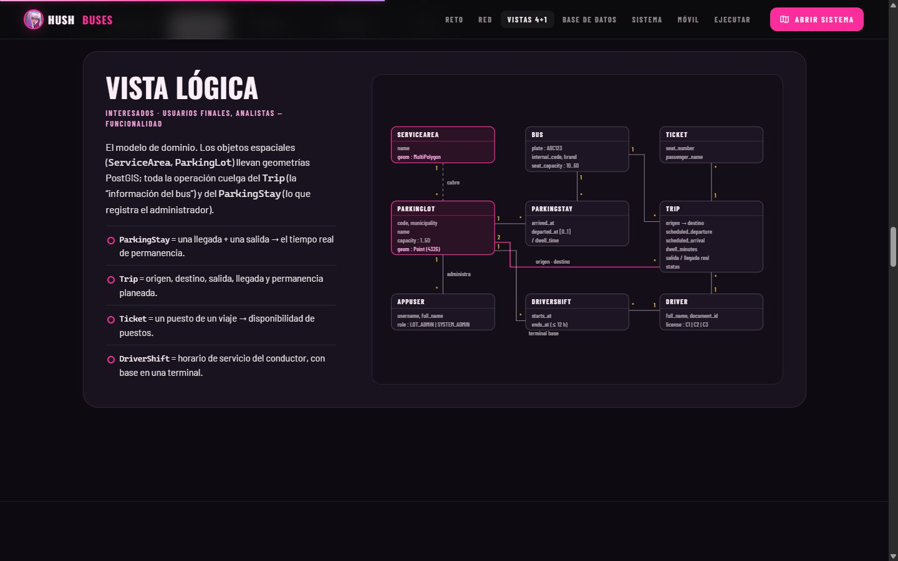
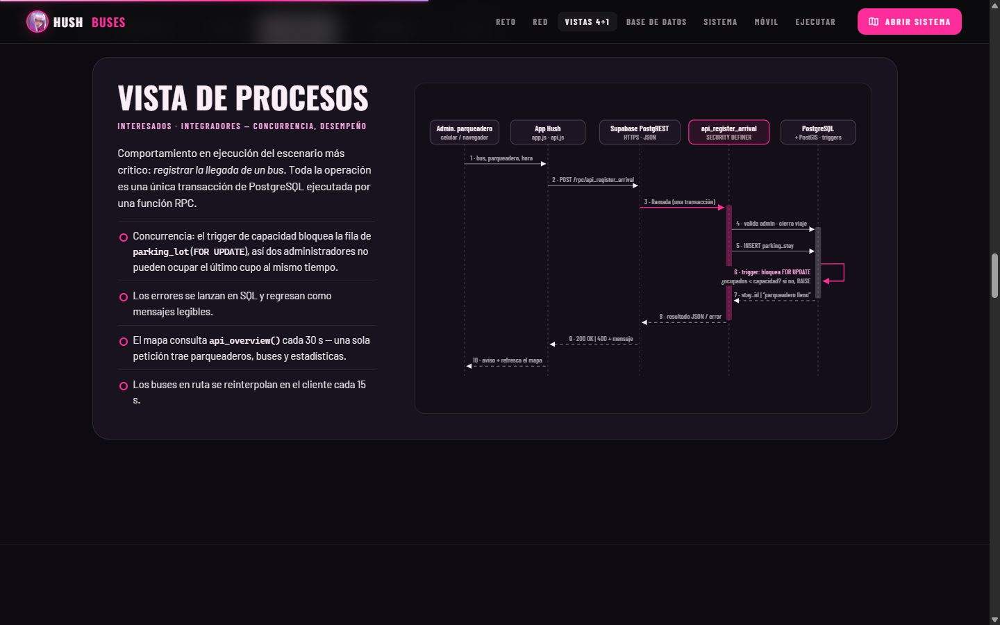
El caso “registrar llegada” atraviesa todas las vistas: es la clase ParkingStay, una transacción con bloqueo de fila, la función api_register_arrival y una llamada HTTPS desde el celular a Supabase.
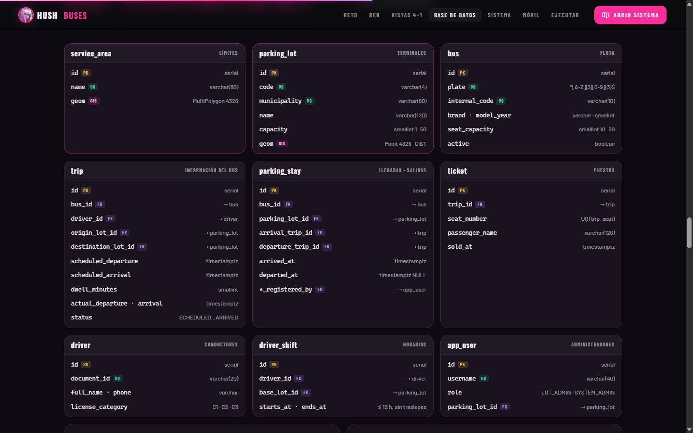
Las reglas viven dentro de la base: ningún cliente, ni la web ni el celular, puede meter un bus en una terminal llena o crear una terminal fuera del departamento.
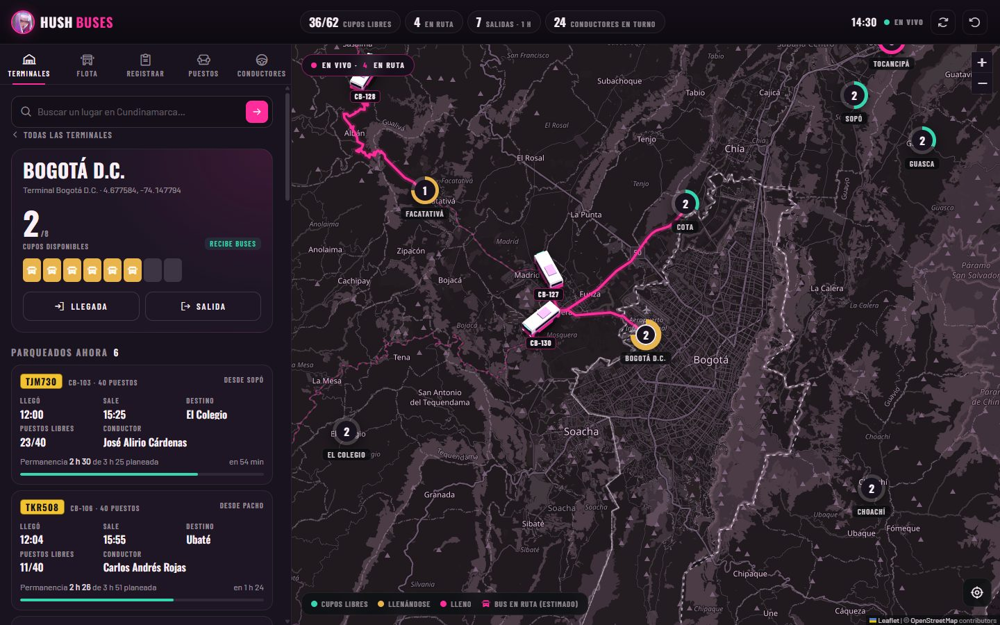
Esto responde lo que pide el taller para el mapa: ubicación de cada parqueadero, cupos disponibles, horas de salida de los buses parqueados y horarios de los conductores.
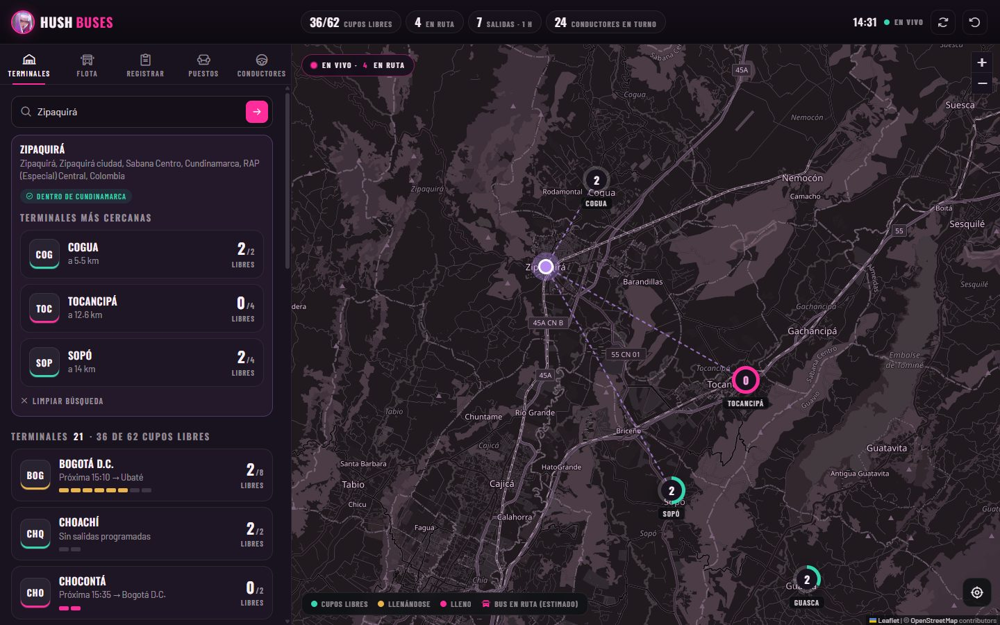
Nominatim de OpenStreetMap convierte el nombre en coordenadas; PostGIS verifica que esté dentro del departamento y ordena las terminales por distancia con el índice espacial.
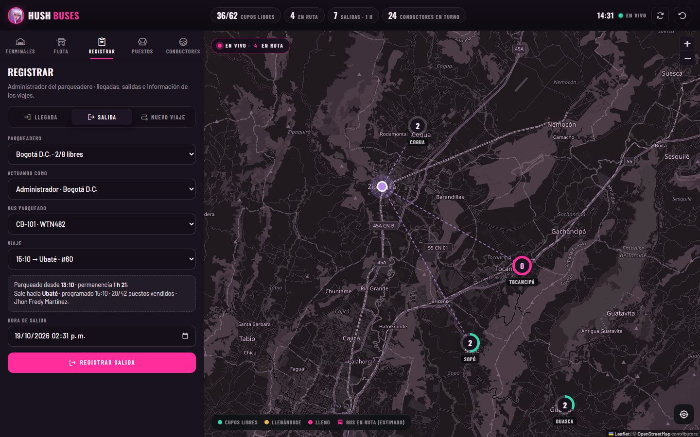
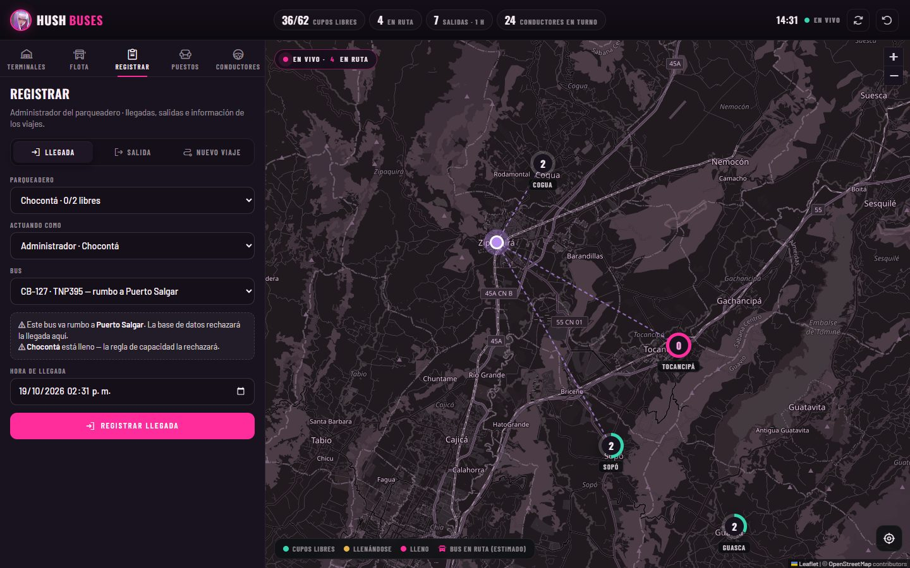
El administrador del parqueadero registra las llegadas y salidas con los datos que pide el taller: origen, destino, hora de salida, hora de llegada y tiempo de permanencia. Si algo viola una regla, la propia base de datos lo rechaza con un mensaje claro.
Reglas visibles: capacidad, viaje hacia otro destino, bus ya parqueado, horas en el futuro, viajes traslapados, administrador de otro parqueadero.
Después de registrar una salida, vuelve a Terminales: el anillo del parqueadero gana un cupo y el bus aparece en el mapa como bus 3D en ruta. Si se quiere repetir la demo desde cero, pulsa Regenerar datos.
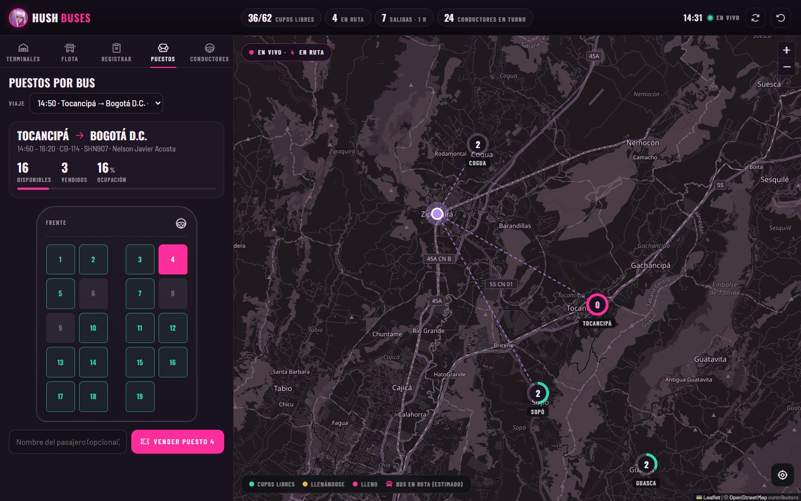
Cada tiquete es un puesto de un viaje. La base impide vender un puesto dos veces, un puesto que no existe o vender después de la salida.
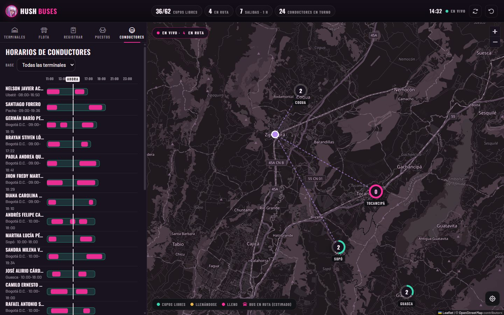
Los turnos no se cruzan ni superan 12 horas, y un conductor no puede tener dos viajes al mismo tiempo.
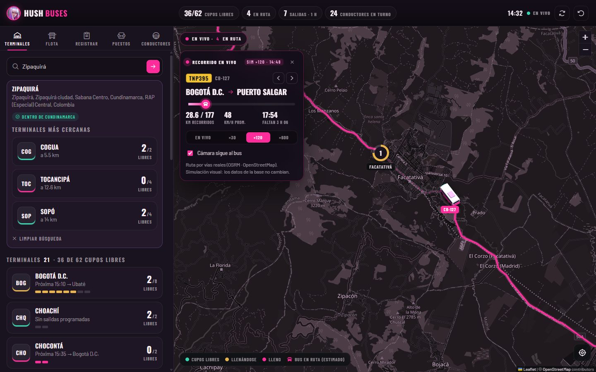
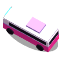
El taller no exige GPS en tiempo real: ubicamos el bus en su vía real según la hora de salida y la de llegada. La velocidad ×600 es solo visual; los datos no cambian.
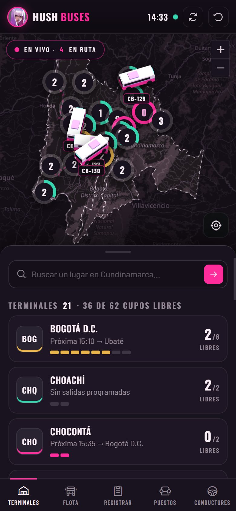
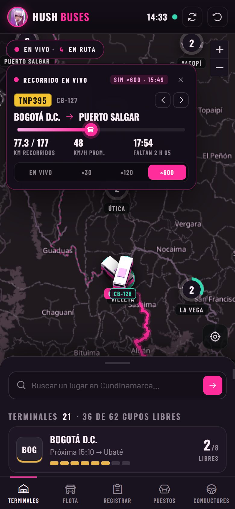
La app Cordova empaqueta exactamente el mismo código del sistema web y agrega el GPS del dispositivo para encontrar la terminal más cercana.
api_*| Mapa | Leaflet 1.9.4 + mosaicos OpenStreetMap (filtro nocturno ciruela) |
| Datos | supabase-js 2.45 → PostgREST · llave pública |
| Geocodificación | Nominatim (directa e inversa), sesgada a Cundinamarca |
| Rutas | OSRM (router.project-osrm.org) · vía real |
| 3D | Three.js 0.149 · cámara ortográfica, render a canvas por marcador |
| Íconos | Phosphor Icons 2.1 |
| Móvil | Apache Cordova 13 · Android 7+ · geolocalización |
| Hosting | Vercel (estático) · proyecto hushbusapp |
| service_area | Polígonos de Cundinamarca y Bogotá (OSM) |
| parking_lot | 21 terminales · capacidad · Point + GiST |
| bus | 30 buses · placa · capacidad de puestos |
| trip | Origen, destino, salida, llegada, permanencia, estado |
| parking_stay | Llegada + salida = permanencia real y ubicación |
| ticket | Puesto vendido (único por viaje) |
| driver · driver_shift | Conductores y turnos ≤ 12 h |
| app_user | Administradores por parqueadero |
Vistas: v_parking_availability, v_bus_location, v_trip_detail, v_parked_buses, v_driver_schedule, v_stay_history.
Trigger con ST_Covers: ninguna terminal fuera de Cundinamarca.
SELECT … FOR UPDATE sobre el parqueadero antes de contar: sin sobrecupo, ni con dos administradores a la vez.
Índice único parcial: solo una estadía abierta por bus.
tstzrange &&: un bus o conductor no tiene dos viajes al tiempo.
Puesto único por viaje, debe existir en el bus y solo antes de la salida.
Solo el administrador del parqueadero registra sus llegadas y salidas.
| Función | Uso |
|---|---|
api_overview() | Todo el mapa en una petición (cada 30 s) |
api_lot_detail(id) | Panel de una terminal |
api_nearest_lots(lat,lng) | KNN <-> + dentro del área |
api_trip_seats(id) | Mapa de puestos |
api_register_arrival | Llegada (cierra viaje, abre estadía) |
api_register_departure | Salida (cierra estadía, viaje en ruta) |
api_create_trip | Información del bus / viaje |
api_sell_ticket | Venta de puesto |
api_reset_demo() | Regenera la operación de demostración |
api_* (SECURITY DEFINER) que aplican las reglas.p = (ahora − salida) / (llegada − salida), limitado entre 0 y 1.p × longitud sobre la vía (búsqueda binaria en distancias acumuladas).v_bus_location hace la estimación oficial con ST_LineInterpolatePoint.# Base de datos: en Supabase → SQL Editor, ejecutar en orden database/01_schema.sql … 07_hardening.sql # Sitio en local npx serve . # abrir http://localhost:3000 # Publicar en Vercel (proyecto hushbusapp) npx vercel deploy --prod # App móvil cd mobile && npm install && npm run sync && npx cordova run android
| Síntoma | Causa probable | Qué hacer |
|---|---|---|
| Indicador “Sin conexión” | Sin internet o el proyecto de Supabase está pausado (plan gratuito tras 7 días sin uso). | Revisar la conexión; en supabase.com reanudar el proyecto chamber-geoapp. |
| No hay salidas próximas o “0 en ruta” | Los horarios de demostración quedaron en el pasado. | Pulsar Regenerar datos (↺). |
| El bus va en línea recta | OSRM (servidor público) no respondió. | Esperar unos segundos o recargar; la demo sigue funcionando. |
| El bus se ve plano | El navegador no tiene WebGL. | Usar Chrome/Edge actualizados; aparece un ícono 2D de respaldo. |
| La búsqueda no encuentra | Nominatim limita a lugares dentro de Cundinamarca. | Probar con municipios: Zipaquirá, Girardot, Fusagasugá. |
| “Rechazado por la base de datos” | Es una regla funcionando (capacidad, destino, horario…). | Leer el mensaje: forma parte de la demostración. |
| Mapa descentrado | Cambio de tamaño de la ventana. | Botón ↻ o cerrar el panel de la terminal. |
Taller 2 — Geocodificación y uso de mapas dinámicos · Prof. Carlos Armando López Solano, MSc.
Datos del mapa © colaboradores de OpenStreetMap (ODbL). Rutas: OSRM. Geocodificación: Nominatim. Video: “Buses and cars in the freeway”, Mixkit. Íconos: Phosphor Icons. Temática, ícono y eslogan de Hush © Riot Games — uso académico. Base de datos: Supabase · PostGIS.
“Reescribe las reglas del campo de batalla.”